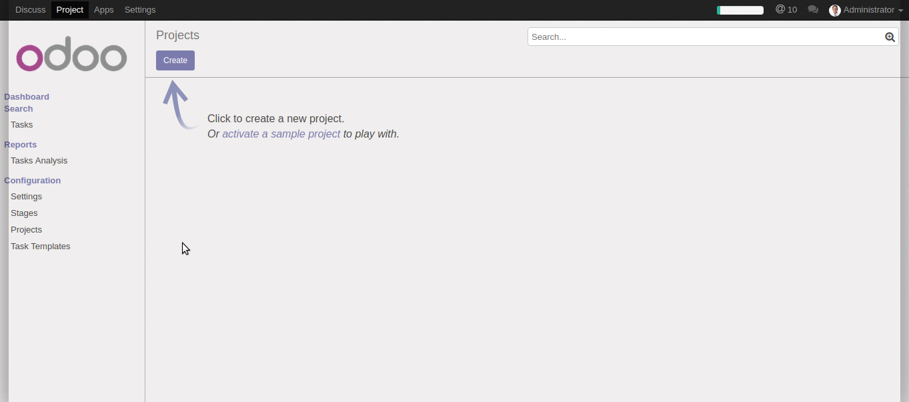
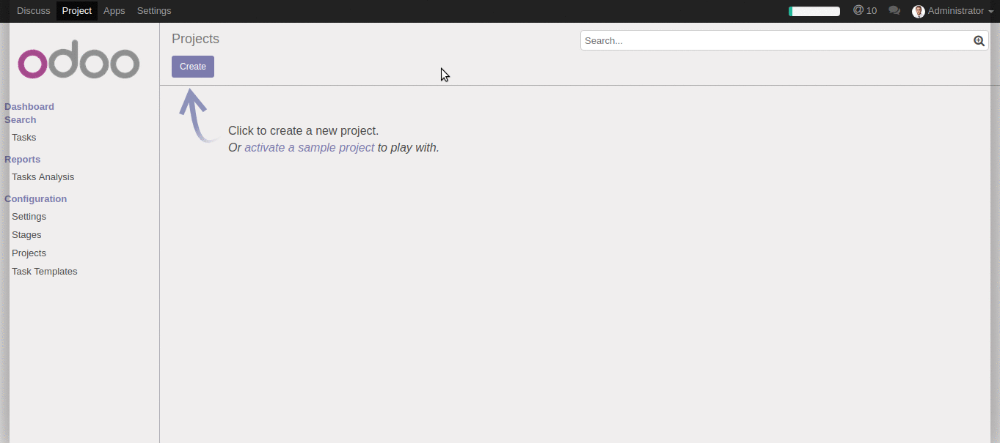
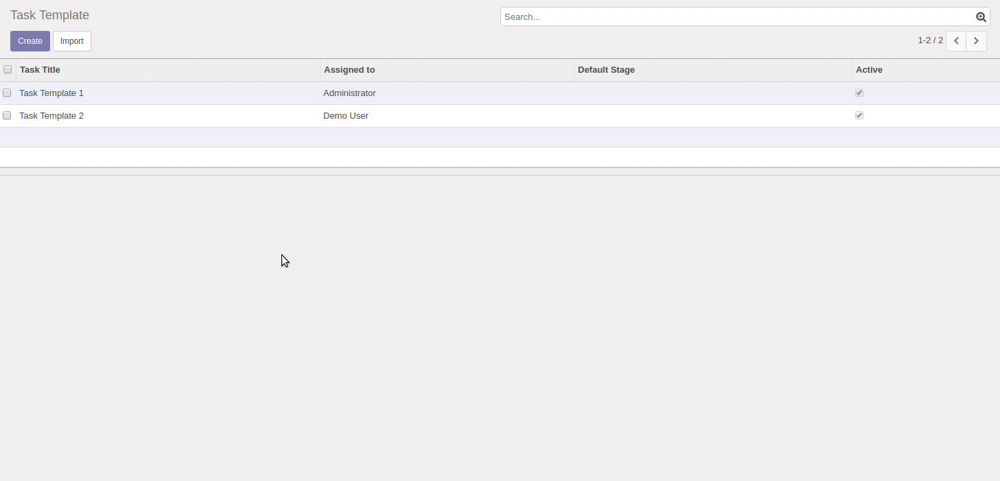

Project Task Templates
Create Task Templates which will be used for new Projects
Create Task Template as usual Task

Create Project as usual

Compatible with other third-party customizations
Work's with custom Task's fields
The template has become temporarily unnecessary?
Easily Disable it and Enable when you need it again

Have questions or need additional functionality?
Contact me via email:
lab.stone.red@gmail.com